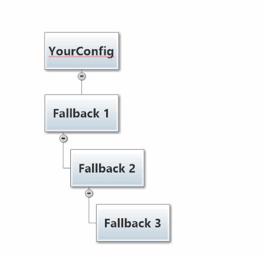

Akka.NET Configuration
Quoted from Akka.NET Bootcamp: Unit 2, Lesson 1 - "Using HOCON Configuration to Configure Akka.NET"
Akka.NET leverages a configuration format, called HOCON, to allow you to configure your Akka.NET applications with whatever level of granularity you want.
What is HOCON?
HOCON (Human-Optimized Config Object Notation) is a flexible and extensible configuration format. It will allow you to configure everything from Akka.NET's IActorRefProvider implementation, logging, network transports, and more commonly - how individual actors are deployed.
Values returned by HOCON are strongly typed (i.e. you can fetch out an int, a Timespan, etc).
What can I do with HOCON?
HOCON allows you to embed easily-readable configuration inside of the otherwise hard-to-read XML in App.config and Web.config. HOCON also lets you query configs by their section paths, and those sections are exposed strongly typed and parsed values you can use inside your applications.
HOCON also lets you nest and/or chain sections of configuration, creating layers of granularity and providing you a semantically namespaced config.
What is HOCON usually used for?
HOCON is commonly used for tuning logging settings, enabling special modules (such as Akka.Remote), or configuring deployments such as the Dispatcher or Router used for a particular actor.
For example, let's configure an ActorSystem with HOCON:
var config = ConfigurationFactory.ParseString(@"
akka.remote.helios.tcp {
transport-class =
""Akka.Remote.Transport.Helios.HeliosTcpTransport, Akka.Remote""
transport-protocol = tcp
port = 8091
hostname = ""127.0.0.1""
}");
var system = ActorSystem.Create("MyActorSystem", config);
As you can see in that example, a HOCON Config object can be parsed from a string using the ConfigurationFactory.ParseString method. Once you have a Config object, you can then pass this to your ActorSystem inside the ActorSystem.Create method.
"Deployment"? What's that?
Deployment is a vague concept, but it's closely tied to HOCON. An actor is "deployed" when it is instantiated and put into service within the ActorSystem somewhere.
When an actor is instantiated within the ActorSystem it can be deployed in one of two places: inside the local process or in another process (this is what Akka.Remote does.)
When an actor is deployed by the ActorSystem, it has a range of configuration settings. These settings control a wide range of behavior options for the actor, such as: is this actor going to be a router? What Dispatcher will it use? What type of mailbox will it have? (More on these concepts in later lessons.)
We haven't gone over what all these options mean, but the key thing to know for now is that the settings used by the ActorSystem to deploy an actor into service can be set within HOCON.
This also means that you can change the behavior of actors dramatically (by changing these settings) without having to actually touch the actor code itself.
Flexible config FTW!
HOCON can be used inside App.config and Web.config
Parsing HOCON from a string is handy for small configuration sections, but what if you want to be able to take advantage of Configuration Transforms for App.config and Web.config and all of the other nice tools we have in the System.Configuration namespace?
As it turns out, you can use HOCON inside these configuration files too!
Here's an example of using HOCON inside App.config:
<?xml version="1.0" encoding="utf-8" ?>
<configuration>
<configSections>
<section name="akka"
type="Akka.Configuration.Hocon.AkkaConfigurationSection, Akka" />
</configSections>
<akka>
<hocon>
<![CDATA[
akka {
# here we are configuring log levels
log-config-on-start = off
stdout-loglevel = INFO
loglevel = ERROR
# this config section will be referenced as akka.actor
actor {
provider = "Akka.Remote.RemoteActorRefProvider, Akka.Remote"
debug {
receive = on
autoreceive = on
lifecycle = on
event-stream = on
unhandled = on
}
}
# here we're configuring the Akka.Remote module
remote {
helios.tcp {
transport-class =
"Akka.Remote.Transport.Helios.HeliosTcpTransport, Akka.Remote"
#applied-adapters = []
transport-protocol = tcp
port = 8091
hostname = "127.0.0.1"
}
log-remote-lifecycle-events = INFO
}
]]>
</hocon>
</akka>
</configuration>
And then we can load this configuration section into our ActorSystem via the following code:
var system = ActorSystem.Create("Mysystem"); //automatically loads App/Web.config
HOCON Configuration Supports Fallbacks
Although this isn't a concept we leverage explicitly in Unit 2, it's a powerful trait of the Config class that comes in handy in lots of production use cases.
HOCON supports the concept of "fallback" configurations - it's easiest to explain this concept visually.

To create something that looks like the diagram above, we have to create a Config object that has three fallbacks chained behind it using syntax like this:
var f0 = ConfigurationFactory.ParseString("a = bar");
var f1 = ConfigurationFactory.ParseString("b = biz");
var f2 = ConfigurationFactory.ParseString("c = baz");
var f3 = ConfigurationFactory.ParseString("a = foo");
var yourConfig = f0.WithFallback(f1)
.WithFallback(f2)
.WithFallback(f3);
If we request a value for a HOCON object with key "a", using the following code:
var a = yourConfig.GetString("a");
Then the internal HOCON engine will match the first HOCON file that contains a definition for key a. In this case, that is f0, which returns the value "bar".
Why wasn't "foo" returned as the value for "a"?
The reason is because HOCON only searches through fallback Config objects if a match is NOT found earlier in the Config chain. If the top-level Config object has a match for a, then the fallbacks won't be searched. In this case, a match for a was found in f0 so the a=foo in f3 was never reached.
What happens when there is a HOCON key miss?
What happens if we run the following code, given that c isn't defined in f0 or f1?
var c = yourConfig.GetString("c");

In this case yourConfig will fallback twice to f2 and return "baz" as the value for key c.